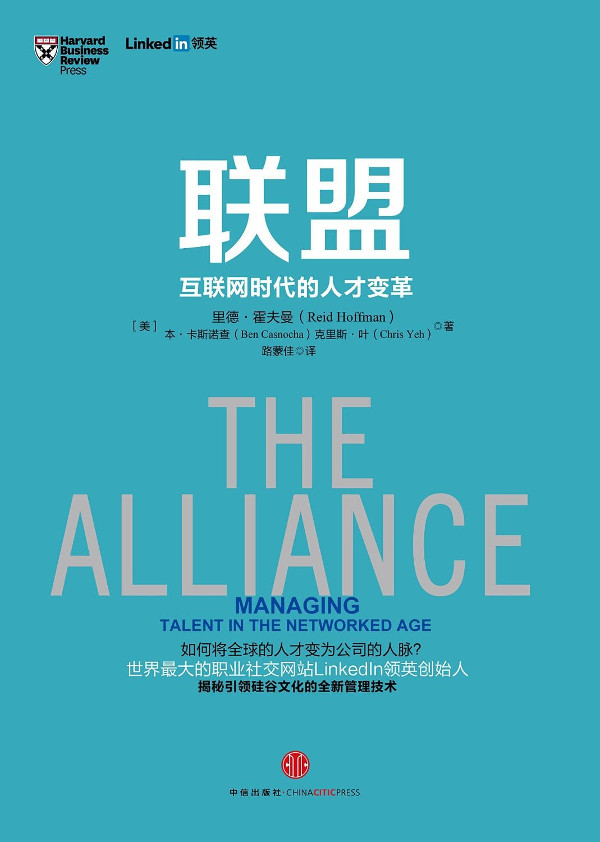

注：【】部分为笔者心得，非原文摘抄。
- 没有员工忠诚的企业就是没有长远考虑的企业，没有长远考虑的企业就是无法投资于未来的企业，而无法投资于未来机会和科技的企业——就是已经在走向灭亡的企业。
- 理想的雇佣关系框架应激励员工发展个人人脉、勇于开拓实干，而不是成为唯利是图的跳槽专业户。
- 不妨将雇佣关系看作一个联盟：一份由独立的双方达成的，有明确条款的互惠协议。
- 在联盟中，雇主和员工建立的关系基于他们为对方增加价值的能力。
- 我们是一个团队，不是一个家庭。—— Reed Hastings
- 拥有创始人思维的人会推动改变、激烈人心、出色地完成任务。—— John Donahoe
- 如果员工感觉不到积极投入自身事业的迫切需要，就可能无法做出公司调整和成长所需的迅速决断。
- 开创性思维和行动是公司需要员工具备的最重要的能力。
- 领导者的任务不是培养能人，而是认识到人们已有的才华，并创造出让其产生和成长的环境。—— Brad Smith
- 招聘人才、管理人才和留住人才是当今公司适应和发展所需的优先要务。
- 承认员工可能离职实际上是建立信任，从而建立良好关系，以确保留住优秀人才的最佳方式。
- 有雄心的公司往往想招聘到希望有朝一日执掌公司的雄才。
- 不管任期有多长，都应进行高度信任、高度诚实的对话，让双方能够进行明智的投资。
- 提供有吸引力的任期计划的雇主能够长期留住最优秀的人才。
- 在工业时代，公司将员工的个人身份变为从属。公司提供终身就业保障和固定收益养老金。作为交换，员工需要俯首听命，努力工作，任何个人理想和价值观都服从于公司的目标和价值观。
- 管理者应该明确追求并强调公司目标和价值观与员工职业目标和价值观之间的共性。
- 公司不是一个家庭，管理者不需要无条件地支持员工的价值观和理想，但必须尊重他们。
- 管理者可以遵循的部分目标协调的技巧和原则：
- 建立和传播公司的使命和价值观；
- 优秀公司拥有不同于竞争对手的具体使命；
- 了解每位员工的核心理想和价值观；
- 合作协调员工、管理者与公司的使命和价值观；
- 建立和传播公司的使命和价值观；
- 员工和公司并不需要永远一致，只要在任期内是如此。
- 一致的兴趣、价值观和目标将增加公司与人才之间维持长期稳固联盟的概率。
- 有机会为值得的事情而努力是人生最美好的犒赏。—— 西奥多·罗斯福
- 向已经成功建立大型公司的优秀领导者学习，为目光比实现财务目标更为远大的公司工作。
- 让最聪明的员工追求他们感兴趣的领域，尤其是最初对他们有些挑战的领域。
- 一对一地确定个人价值观。
- 通过坦诚建立信任。
- 公司的传统绩效考核方法是基于日历年的，它在任期制背景下几乎没有意义。是任务目标而非日历决定了任期。
- 与公司相互信任的员工可以解决战略性更强的长期目标。
- 没有公司能永远留住所有最优秀的员工。
- 管理者不应用任期计划的道德强制性迫使员工固守工作繁重的岗位，尤其是有缺陷的管理决策造成双方目标严重不符时。
- 任期计划的目标是通过诚实交流建立信任，在自愿基础上建立长期关系，而不是将员工禁锢在他们不喜欢的职位上或者让低效员工拖累公司。
- 拥有一份书面任期计划而不是依赖于经理和员工的口头协定非常重要。
- 牢记联盟是一种关系而不是一笔交易。
- 起起伏伏是不可避免的，双方应该保持长远的投资眼光，而不是对短期波动反应过度。
- 如果员工已经做出合理有序的安排，让这种变化不会危及现在的任务，经理就不应该阻止他在公司内部调动职位。这种变化尊重了员工的意愿，公司对这名员工进行的投资和整体关系。
- 地位不平衡让人担心更有地位的一方会滥用这种地位最大化自身利益。如果你处于强势地位，应该积极主动地证明你对公平交易的承诺。
- 道德劝说比法律合同更能维系双方的联盟，但你只应在对方违反联盟时运用这种力量。
- 不要让员工的职业选择成为个人攻击的理由。
- 通过公开、透明建立信任的基础。
- 证明开放性的一种重要方法时表现出愿意讨论员工离职可能的态度。这种透明度有助于建立信任，减少员工离职让你措手不及的风险。
- 职业人脉是能够提升自身长期职业前景的重要资本之一。
- 扩大职业人脉有助于员工改变职业生涯，员工人脉有助于公司改变自身。
- 将你的公司与竞争对手区分开的最佳方式，将你与碌碌大众区分开的最佳方式，就是充分利用信息。你如何收集、管理和使用信息将决定你的输赢。—— 比尔·盖茨
- 通过帮助员工投资于他们的个人人脉，你将建立起信任互惠的环境。这样，当你要求员工为公司利用他们自己的人脉时，他们将更可能做出积极反应。
- 在高度网络化的时代，你认识的人经常比你读的东西更有价值。
- 获取人脉情报的手段应该符合道德。
- 创新产生于不同学科和文化的交织。—— Frans Johansson
- 当创新、适应和执行至关重要时，成功与团队如何和外部人互动密切相关，因为成功的团队会建立紧密的跨界人脉，不管是在团队内部还是外部。—— 《X 因素》
- 人脉情报在发现病毒式增长模式的过程中起到了关键作用。
- 聘用有人脉的人。
- 应该鼓励员工打进攻战。直接下属应该与他们认识的人谈论团队面临的重要挑战。
- 除非信息得到共享，否则它们没有价值。
- 风险投资公司 Andreessen Horowitz 以一种不同寻常的方式挖掘员工的人脉情报：在每次合伙人会议开始时，这家公司都会提供 100 美元奖金，奖励最佳小道消息，不管它们是否得到确认。
- 鼓励员工积极使用社交媒体展示自己。
- 为员工建立人脉基金。
- 为员工发言提供方便。
- 积极听取员工从他们的人脉圈那里了解的信息并利用该信息为公司解决挑战性问题。
- 人脉情报有助于公司关注重要问题，并快速吸取其它公司的经验。
- 联盟的基础是：公司帮助员工改变职业生涯，员工帮助公司改变自身并提高适应力。
- 终身雇佣制可能结束了，但终身关系仍然是人们梦寐以求的。
- 公司同事联络网越巩固公司品牌，就越容易利用该联络网招聘人才、获取人脉情报和推荐客户。
- 几乎任何公司都应该支持它们的前员工，因为维持一段持续关系的成本很低，并且能带来潜在收益。
- 没有在离职面谈中与员工巩固终身关系，等于错失了一个巨大机会。
- 公司应该邀请前员工参加公司的重要庆典活动。
- 所有健康的关系都是从考虑如何互助开始的。
- 在所有对话中，管理者都应该从员工的角度出发。
- 用同事联络网作为招聘过程中的卖点。
- 让现任员工能够简单明了地利用同事联络网获取人脉情报。